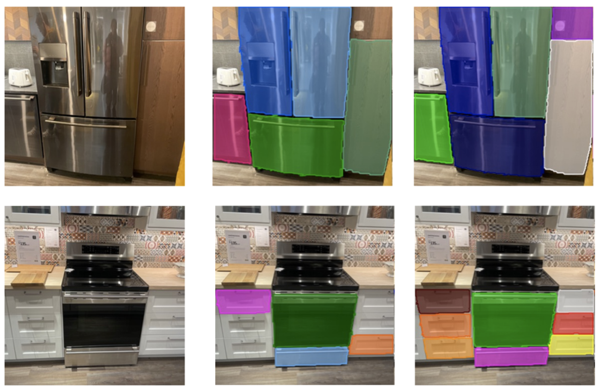
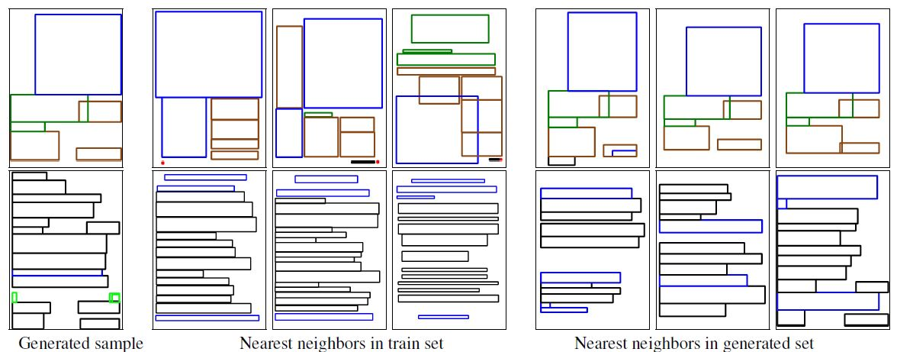

Work Experience
|
|
3D Applied Scientist Intern
Aug 2022 - Jan 2023 |
|
|
Research Scientist Intern May-Nov 2021 |
|
|
Applied Scientist Intern
Dec 2018 - March 2019 |
Akshay Gadi Patil
Email:
[UPDATE] I am on the job market actively looking for PostDoc/Research Scientist positions
I obtained my Ph.D. from Simon Fraser University where I was a member of the GrUVi Lab, advised by Hao (Richard) Zhang.
I work in the areas of 3D computer graphics and vision, with a focus on applications of deep learning to generative
and interactive shape/scene understanding and geometric modeling problems.
My research focuses on the neural modeling of 2D documents, 3D shapes and 3D scenes, exploring different
representations centered around generation, reconstruction, and interaction tasks. I also explore
the coupling of text/language commands to model and manipulate visual data.
Earlier, I graduated with a M.Tech in Electrical Engineering (Signal Processing) from IIT Gandhinagar, working with Shanmuganathan Raman. I was also a visiting student at JAIST, Japan .
|
|
3D Applied Scientist Intern
Aug 2022 - Jan 2023 |
|
|
Research Scientist Intern May-Nov 2021 |
|
|
Applied Scientist Intern
Dec 2018 - March 2019 |
"Si falta pasión no se encuentra la victoria".
- Rafa
|
Learning to Model 3D Indoor Scenes and Articulated Objects Akshay Gadi Patil Ph.D. Dissertation (Distinction: Defence and Thesis passed as is) Link |
|
|
Advances in Data-Driven Analysis and Synthesis of 3D Indoor Scenes Akshay Gadi Patil, Supriya Gadi Patil, Manyi Li, Matthew Fisher, Manolis Savva, Hao Zhang Computer Graphics Forum (CGF) 2023 [Paper] |
|
|
RoSI: Recovering 3D Shape Interiors from Few Articulation Images Akshay Gadi Patil, Yiming Qian, Shan Yang, Brian Jackson, Eric Bennett, Hao Zhang arXiv 2023 [Paper] |
|
|
DiViNeT: 3D Reconstruction from Disparate Views via Neural Template Regularization Aiya Vora, Akshay Gadi Patil, Hao Zhang NeurIPS 2023 [Paper] |
|
|  |
Coarse-to-Fine Active Segmentation of Interactable Parts in Real Scene Images Ruiqi Wang, Akshay Gadi Patil, Hao Zhang arXiv 2023 [ Paper] |

|
LayoutGMN: Neural Graph Matching for Structural Layout Similarity Akshay Gadi Patil, Manyi Li, Matthew Fisher, Manolis Savva, Hao Zhang CVPR 2021 Paper, Supp, Code, Video |
|
DR-KFS: A Differentiable Visual Similarity Metric for 3D Shape Reconstruction Jiongchao Jin, Akshay Gadi Patil, Zhang Xiong, Hao Zhang ECCV 2020 Paper |
 |
READ: Recursive Autoencoders for Document Layout Generation
Akshay Gadi Patil, Omri Ben-Eliezer, Or Perel, Hadar Averbuch-Elor CVPR 2020 (Workshop on Text and Documents in Deep Learning Era, Best Paper Award ) Paper, Supplementary, Video |
|
GRAINS: Generative Recursive Autoencoders for INdoor Scenes
Manyi Li, Akshay Gadi Patil, Kai Xu, Siddhartha Chaudhuri, Owais Khan, Ariel Shamir, Changhe Tu, Baoquan Chen, Daniel Cohen-Or, Hao Zhang Transactions on Graphics (Special Issue of SIGGRAPH 2019) Project Page |
|
|
Language-Driven Synthesis of 3D Scenes Using Scene Databases
Akshay Gadi Patil*, Rui Ma*, Matthew Fisher, Manyi Li, Sören Pirk, Binh-Son Hua, Sai-Kit Yeung, Xin Tong, Leonidas Guibas, Hao Zhang SIGGRAPH Asia, Tokyo, 2018 (*Co-first Authors) Project Page, Media |
|
Automatic Content-Aware Non-Photorealistic Rendering of Images
Akshay Gadi Patil, Shanmuganathan Raman International Symposium on Visual Computing (ISVC), Las Vegas, 2016. Paper |
|
|
Tone Mapping HDR Images Using Local Texture and Brightness Measures
Akshay Gadi Patil, Shanmuganathan Raman International Conference on Computer Vision and Image Processing (CVIP), 2016. |
Outstanding Reviewer Award, ECCV 2022
Outstanding Reviewer Award, ICCV 2021
Best Paper Award at the CVPR Workshop on Texts and Documents in Deep Learning Era - 2020
SFU Computing Science Graduate Fellowship - 2016, 2018, 2019
SFU Graduate Fellowhsip - 2018
Century 21 Charlwood Family Graduate Scholarship - 2018, 2019
Helmut & Hugo Eppich Family Graduate Scholarship - 2021
Stanford Vision and Learning Lab - May 2023
Max Planck Institute for Informatics - March 2023
Facebook - May 2022
Computational Design and Fabrication Group, MIT - July 2021
Young Scientists' Seminar, CMSA, Harvard University - Dec 2020
Graphics and Vision Seminar, Tel Aviv University - Dec 2018
Amazon - Dec 2018
Co-organizer of Learning to Generate 3D Shapes and Scenes workshop at ECCV 2022
Reviewer
Machine Learning: ICML (2022-24), ICLR (2020-24), NeurIPS (2021-23)
Vision+Graphics: ECCV (2022, 24), ICCV (2021, 23), CVPR (2021-24)
Computer Graphics: SIGGRAPH (2019, 22, 24), SIGGRAPH Asia (2021, 22), Eurographics (2022), CGF (since 2020), TVCG (since 2019)
Student Volunteer (SV) at SIGGRAPH'18